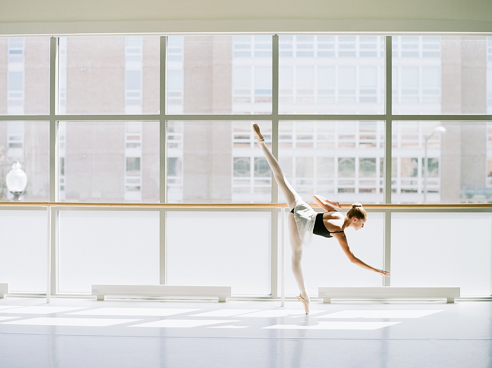

Classical Ballet Training
Ballet requires immense discipline, strength, and grace. Dancers progress through rigorous training regimens to master the art form.

The Structure of a Ballet Class
A typical professional or academic ballet class is divided into distinct segments to safely warm up and train the body:
- Barre Exercises — The fundamental warmup where dancers hold a handrail for support.
- Center Work — Moving to the middle of the room to practice balance and fluid combinations, which includes:
- Adagio (slow, controlled movements)
- Pirouettes (turns and spins)
- Allegro (brisk, lively jumping steps)
- Reverence — A traditional bow or curtsy at the end of class to show respect to the teacher and pianist.